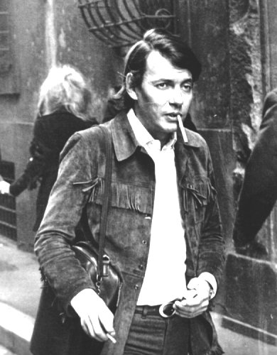
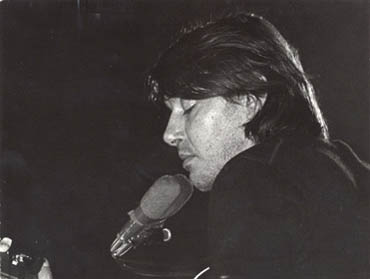
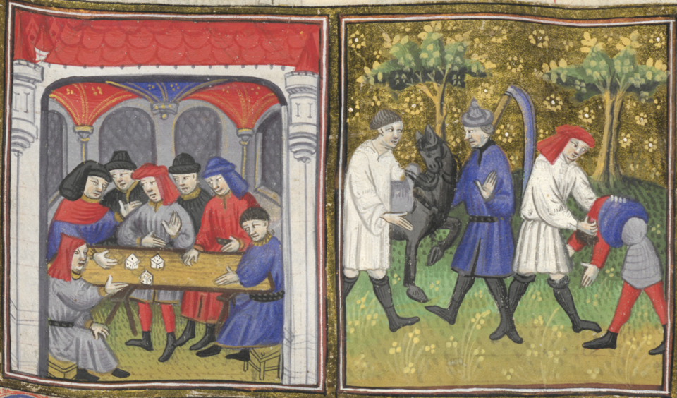
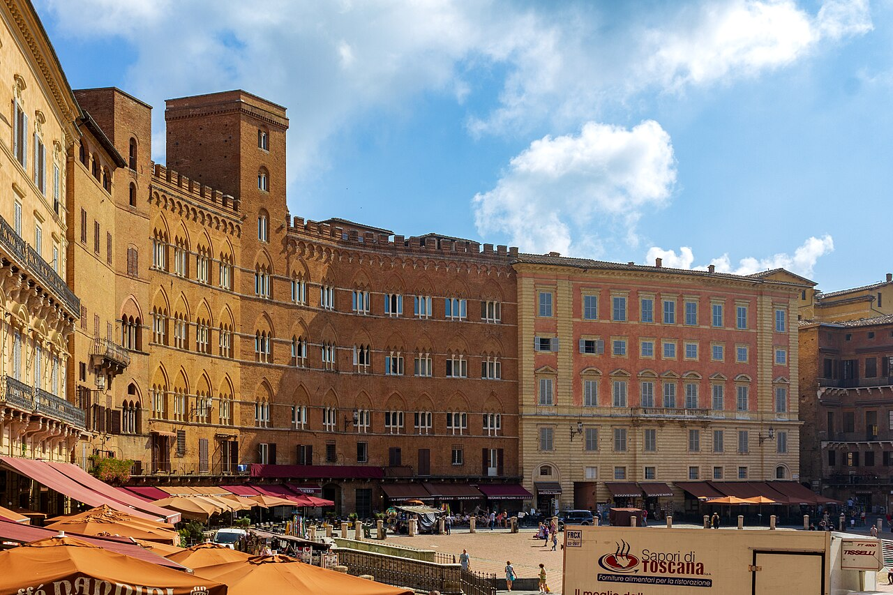
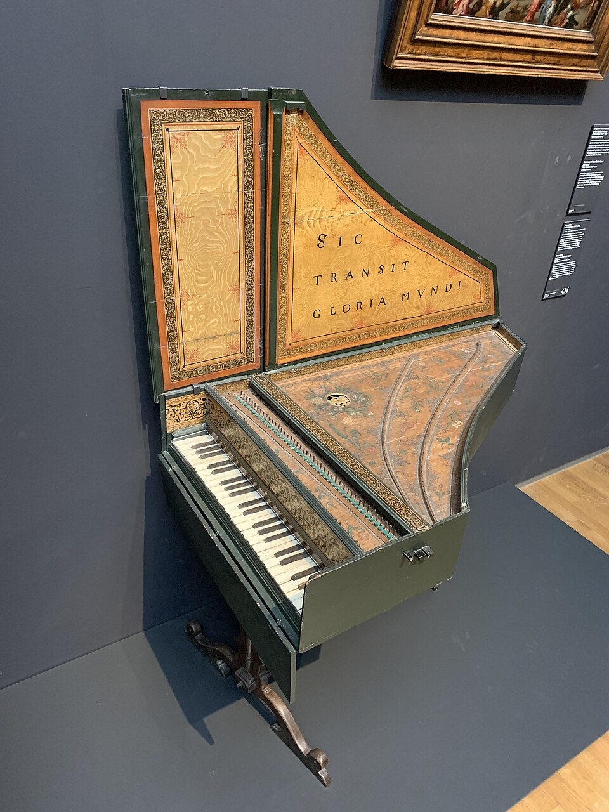
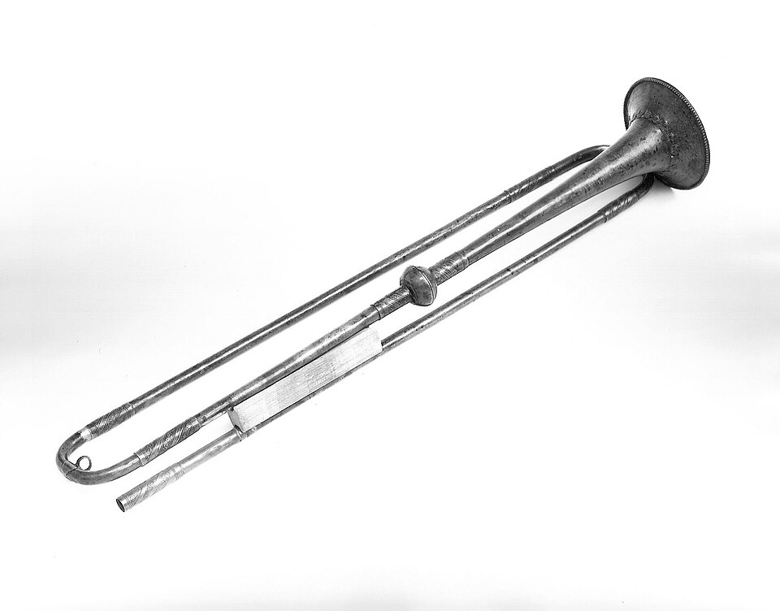

Dal sonetto alla canzone d'autore
Come Fabrizio De André ha messo in musica il sonetto di Cecco Angiolieri
S'i' fosse foco, arderei 'l mondo;
s'i' fosse vento, lo tempestarei;
s'i' fosse acqua, i' l'annegherei;
s'i' fosse Dio, mandereil' en profondo.
Il cantautore
Genova, 18 febbraio 1940 – Milano, 11 gennaio 1999. Conosciuto come “Faber”, è considerato uno dei maggiori cantautori italiani del Novecento.
Al centro delle sue canzoni ci sono gli emarginati: persone escluse dalla società, sconfitti, ribelli. Il suo punto di vista è libertario e anticonformista, vicino al pensiero anarchico, e guarda con sospetto ogni forma di potere.
Il suo lavoro dialoga spesso con la letteratura: traduce le canzoni del francese Georges Brassens, si ispira ai Vangeli apocrifi in La buona novella e all'Antologia di Spoon River di Edgar Lee Masters.
Per la cura dei testi viene spesso definito un poeta della canzone: alcuni suoi brani sono stati inseriti anche nelle antologie scolastiche.


Il poeta
Siena, 1260 circa – 1312 circa. Contemporaneo di Dante, è il più noto esponente della poesia comico-realistica del Duecento.
Nasce in una ricca famiglia guelfa, ma conduce una vita disordinata: riceve diverse multe (anche per aver abbandonato il campo durante una spedizione militare), accumula debiti e, alla sua morte, i figli rinunciano all'eredità.
Nei suoi sonetti celebra ciò che lo Stilnovo escludeva: «la donna, la taverna e 'l dado», il desiderio di denaro, il contrasto con il padre avaro, l'amata Becchina, una popolana lontana dalla donna-angelo.
Per questo è considerato la voce opposta a Dante: dove lo Stilnovo idealizza, Cecco abbassa il tono, provoca e fa ridere.


Sette secoli di distanza
Analisi metrica
Clicca su un verso
Il sonetto è composto da 14 endecasillabi (versi di undici sillabe), divisi in due quartine e due terzine. Lo schema delle rime è ABBA ABBA CDC DCD. Quasi ogni verso si apre con la formula ipotetica “S'i' fosse…”: si tratta di un'anafora, che dà al testo il ritmo di una cantilena.
Il discorso procede per climax discendente: dall'intero universo si arriva, verso dopo verso, alla vita privata di Cecco, fino al rovesciamento ironico dell'ultima terzina.
Dalla pagina al disco
De André non riscrive il sonetto, ma lo canta quasi parola per parola. Cambia invece la forma: una canzone richiede un'introduzione, delle ripetizioni e una chiusura. Clicca sui blocchi per leggere la descrizione.
Schema semplificato del brano (durate indicative).
Il brano si basa su un tempo ternario, il 3/4 tipico del valzer: ogni battuta è divisa in tre tempi, con l'accento forte sul primo (UN-due-tre).
Il valzer nasce come danza popolare di area austro-tedesca alla fine del Settecento e diventa poi il ballo delle sale da concerto e delle feste di paese. È un ritmo leggero, circolare e brillante: proprio per questo, abbinato a un testo così aggressivo, produce un effetto ironico.
1. Il testo resta intatto. I 14 endecasillabi vengono mantenuti; la prima quartina ritorna alla fine come ripresa, con una funzione simile a quella di un ritornello.
2. Ogni verso diventa una frase musicale. L'anafora “S'i' fosse…” si trasforma in un attacco ripetuto, facile da memorizzare.
3. Un'armonia semplice. Il brano usa pochi accordi in tonalità minore (nel disco sol diesis minore). Il giro principale, trasposto in la minore, è Am – F – E7 – Am.
4. Il contrasto. Parole di distruzione su un ritmo di danza: lo scarto crea ironia e fa capire che la rabbia di Cecco è un gioco letterario.
5. Un'ambientazione antica. L'arrangiamento di Gian Piero Reverberi, coautore della musica, usa clavicembalo e squilli di tromba, che richiamano le corti e le piazze del passato.
Leggere e comprendere
Il testo cantato è il sonetto di Cecco (XIII secolo, oggi di pubblico dominio). Attivando la parafrasi si può leggere ogni verso in italiano moderno.
Le quartine. Cecco immagina di essere le forze più potenti dell'universo (fuoco, vento, acqua, Dio) e le massime autorità del suo tempo (papa e imperatore). Ogni volta il desiderio è lo stesso: distruggere.
La prima terzina. L'ostilità si sposta sulla famiglia: da morte andrebbe dal padre, da vita fuggirebbe da lui, e lo stesso farebbe con la madre. Il tema richiama i numerosi sonetti in cui Cecco accusa il padre di avarizia.
L'ultima terzina. Arriva il rovesciamento: tornato se stesso, Cecco non vuole più distruggere nulla, ma tenere per sé le donne giovani e belle e lasciare agli altri quelle vecchie e brutte.
La furia cosmica si risolve in una battuta da osteria: è questo il nucleo ironico del sonetto.
L'uso del condizionale (arderei, tempesterei…) e del periodo ipotetico mostra che non si tratta di una minaccia reale, ma di una parodia dello stile alto e di una provocazione contro ogni autorità: religiosa, politica e familiare.
La scelta
Cecco è un autore irregolare, che attacca Chiesa, Impero e famiglia. De André, libertario e anticonformista, riconosce in lui una sensibilità vicina alla propria.
Nell'anno della contestazione studentesca, un testo che sfida papa, imperatore e padri appare sorprendentemente attuale e parla direttamente ai giovani.
Come il suo modello Brassens, De André apprezza l'irriverenza che fa sorridere. Il sonetto non è un manifesto violento, ma una provocazione giocosa, adatta a una canzone.
Ritmo regolare, anafora e rime sonore rendono il testo naturalmente cantabile. In musica, un classico studiato a scuola raggiunge un pubblico molto più ampio.
È l'unica volta, nella sua carriera, in cui De André mette in musica una poesia della tradizione letteraria italiana mantenendone il testo originale: un omaggio diretto alle radici della nostra letteratura.
Il suono di “S'i' fosse foco”
L'arrangiamento di Gian Piero Reverberi costruisce un'atmosfera volutamente antica, come se il sonetto fosse cantato da un giullare in una piazza medievale. Con “Ascolta” si sente un timbro simile, sintetizzato dal browser.

Il colore antico
Strumento a tastiera in cui le corde vengono pizzicate. Nella canzone scandisce il ritmo di valzer con un suono secco e metallico, che richiama la musica di corte e colloca subito il brano in un passato lontano.

La fanfara
Gli squilli di tromba hanno un tono cerimoniale, simile a quello di un araldo che annuncia un proclama. Contribuiscono al carattere teatrale e solenne, ma in fondo ironico, dell'esecuzione.
Il narratore
La voce baritonale di De André è il vero centro del brano: un'interpretazione teatrale e beffarda, che dà corpo all'ironia di Cecco e fa risaltare la battuta finale.
Laboratorio musicale
Un motivetto costruito sul giro di accordi della canzone, Am – F – E7 – Am, in tempo di valzer: introduzione di trombe, clavicembalo che accompagna sul secondo e terzo tempo, basso sul primo.
Conclusione
Con S'i' fosse foco De André dimostra che la poesia antica può essere ancora attuale: un ritmo di valzer, un clavicembalo e una voce bastano a portare la provocazione di un poeta senese del Duecento fino al pubblico del 1968, e fino a noi.